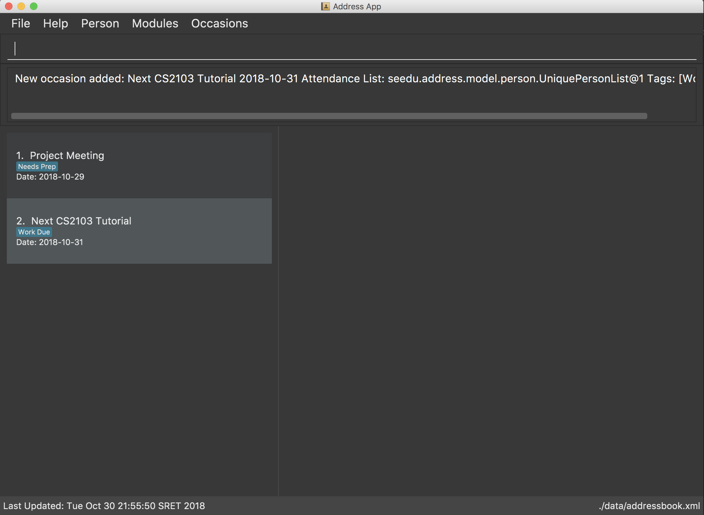
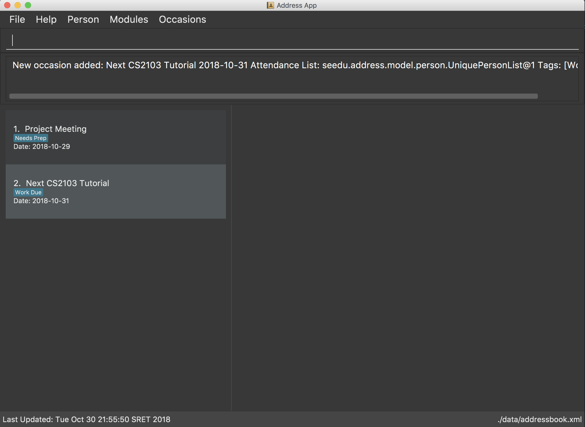

By: Team W10-01 Since: Aug 2018 Licence: MIT
- 1. Introduction
- 2. Quick Start
- 3. GUI Components
- 4. Types of Entries
- 5. Features
- 5.1. Viewing help :
help - 5.2. Adding an entry:
add - 5.3. Listing all entries :
list - 5.4. Selecting an Entry:
select - 5.5. Editing an entry :
edit - 5.6. Locating entries:
find - 5.7. Deleting an entry:
delete - 5.8. Undoing previous command :
undo - 5.9. Redoing the previously undone command :
redo - 5.10. Clear all lists:
clear - 5.11. Showing command history:
history - 5.12. Autocomplete
- 5.13. Exporting user data to xml/txt:
export - 5.14. Importing data into TheTracker:
import(coming in v 2.0) - 5.15. Importing module information from external platform:
importmodule(coming in v 2.0) - 5.16. Grouping content together by tag:
group(coming in v 2.0) - 5.17. Exiting the program :
exit - 5.18. Saving the data
- 5.1. Viewing help :
- 6. FAQ
- 7. Command Summary
1. Introduction
TheTracker is for NUS students who prefer to use a desktop app for managing contacts, events or modules. More importantly, TheTracker is optimized for those who prefer to work with a Command Line Interface (CLI) while still having the benefits of a Graphical User Interface (GUI). If you can type fast, TheTracker can get your contact management tasks done faster than traditional GUI apps whilst being able to keep track with your friends! Interested? Jump to the Section 2, “Quick Start” to get started. Enjoy!
2. Quick Start
This section explains how to setup TheTracker on your computer, and lists a few commands that you can try.
-
Ensure you have Java version
9or later installed in your Computer. -
Download the latest
TheTracker.jarhere. -
Copy the file to the folder you want to use as the home folder for your TheTracker.
-
Double-click the file to start the app. The GUI should appear in a few seconds.

 
 -
Type the command in the command box and press Enter to execute it.
e.g. typinghelpand pressing Enter will open the help window. -
Some example commands you can try:
-
listmodule: lists all modules -
addperson n/John Doe t/98765432 t/johnd@example.com t/John street, block 123, #01-01: adds a contact namedJohn Doeto TheTracker. -
delete 2: deletes the 2nd entry in the active list -
undo: undoes the previous modifying action -
exit: exits the app
-
-
Refer to Section 5, “Features” for details of each command.
3. GUI Components
This section explains the components of the GUI, along with some ways you can interact with it.
3.1. Layout
TheTracker’s GUI is divided into 5 main regions that you will interact with:

-
Menu Bar: contains simple commands to switch between windows
-
Command Box: text box (equipped with auto-suggestions) to receive input commands
-
Result Display: panel that displays the result of inputted commands
-
List Panel: panel displaying all saved persons/modules/occasions
-
Info Panel: panel displaying additional information for selected entry
The info panel does not refresh even after you switch between lists, just in case you want to refer to other lists
while editing an entry. To refresh the info panel, use the select command.
|
3.2. Using the GUI
-
Switching between person, module and occasion lists can be done from the Menu Bar by clicking on the desired type, followed by "Show Persons/Modules/Occasions". You can also view these using the
listperson,listmoduleandlistoccasioncommands in the Command Box. -
Clicking on an entry in the List Panel selects the entry. This allows you to see its additional info in the Info Panel. Selecting an entry can also be done by using the
selectcommand in the Command Box.
4. Types of Entries
This section explains the three types of entries - person, module and occasion.
Each of them contains a compulsory field, optional fields, optional tags and relevant lists as explained below.
4.1. Shared: Tags
All three types of entries contain the following fields:
4.2. Person
A Person has the following fields:
A person will also have a module list and occasion list. These are comprised of modules and occasions that are currently in the address book.
These lists will be initialized as empty until modules or occasions are added.
Warning: Persons with the same name are permitted as long as they differ in at least one other field. Use with caution, as they may be difficult to distinguish (e.g. in a module’s registration list).
4.3. Module
A Module has the following fields:
A module will also have a person list. This will be consistent with the persons in the list (i.e. the module will appear in their module lists).
Warning: Module with the same code are permitted as long as they differ in at least one other field. Use with caution, as they may be difficult to distinguish (e.g. in a person’s module list).
4.4. Occasion
An Occasion has the following features:
An occasion will also have a person list. This will be consistent with the persons in the list (i.e. the occasion will appear in their occasion lists).
Warning: Occasions with the same name are permitted as long as they differ in at least one other field. Use with caution, as they may be difficult to distinguish (e.g. in a person’s occasion list).
5. Features
Notice
-
Words in
UPPER_CASEare the parameters to be supplied by the user e.g. inadd n/NAME,NAMEis a parameter which can be used asadd n/John Doe. -
Items in square brackets are optional e.g
n/NAME [t/VALUE]can be used asn/John Doe t/friendor asn/John Doe. -
Items with
… after them can be used multiple times including zero times e.g.[t/TAG]…can be used ast/friend,t/friend t/familyetc. -
[]after a command word (eg.add[]) refers to the postfix of the command. It may be person, module and occasion respectively.
5.1. Viewing help : help
Opens this user guide in a separate window.
Format: help
5.2. Adding an entry: add
|
A person, module or an occasion can have any number of tags (including 0) and in no particular order. |
5.2.1. Adding a person: addperson
Adds a person to TheTracker.
Format:
addperson n/NAME [p/PHONE_NUMBER] [e/EMAIL_ADDRESS] [a/HOME_ADDRESS] [t/TAG]…
Example:
addperson n/John Doe
addperson n/John Doe p/98765432 e/johnd@example.com a/311, Clementi Ave 2, #02-25 t/friends t/owesMoney
Notice
-
Persons with the same Name and either one or both of Phone and Email are considered to be the same person.
-
Name must be specified to create a person contact.
-
If not enetered, Phone number, Email Address, Home Address and tags are empty.
5.2.2. Adding a module: addmodule
Adds a module to TheTracker.
Format:
addmodule mc/MODULE_CODE [mt/MODULE_TITLE] [ay/ACADEMIC_YEAR] [sem/SEMESTER] [t/TAG]…
Example:
addmodule mc/CS2103
addmodule mc/CS2103 mt/SOFTWARE ENGINEERING ay/1718 sem/1 t/gg
Notice
-
Module with the same Module Code, Academic Year and Semester are considered to be the same module.
-
Module Code must be specified to create a module.
-
If not entered, Academic Year, Module Title, Semester and Tags are empty.
-
Semester number 3 and 4 are used to refer to special terms at NUS.
5.2.3. Adding an occasion: addoccasion
Adds an occasion to TheTracker.
Format:
addoccasion on/OCCASION_NAME [od/OCCASION_DATE] [loc/LOCATION] [t/TAG]…
Example:
addoccasion on/discussion
addoccasion on/discussion od/2018-01-01 loc/SoC t/project t/gg
Notice
-
Occasion with the same Occasion Name and Occasion Date are considered to be the same occasion.
-
Occasion Name must be specified to create an occasion. The length of Occasion Name should be between 3 - 30.
-
If not entered, Occasion Date, Occasion Location and Tags are empty.
5.3. Listing all entries : list
Shows a desired list in TheTracker.
5.3.1. List all Persons: listperson
Shows the complete list of persons in TheTracker.
Format: listperson
5.3.2. List all Modules: listmodule
Shows the complete list of modules in TheTracker.
Format: listmodule
5.3.3. List all Occasions: listoccasion
Shows the complete list of occasions in TheTracker.
Format: listoccasion
If you have filtered the list using the find command, you can use the listperson, listmodule
and listoccasion commands to populate the entire list again.
|
5.4. Selecting an Entry: select
Selects the event identified by the index number in the List Panel. The Info Panel will display the additional information for that entry.
Format: select INDEX
| On startup, no entry should be selected. Entries will not be deselected until another entry is selected. |
5.5. Editing an entry : edit
Edits an existing person, module or occasion in TheTracker.
It can be used to add optional field that is not specified in the add command.
5.5.1. Editing a person : editperson
Edits an existing person in TheTracker.
Format:
editperson INDEX x/VALUE …
Example:
editperson 6 p/91234567 e/johndoe@example.com
Edits the person at INDEX 6 in TheTracker: edits his phone to 91234567 and email address to johndoe@example.com.
Notice
-
The
x/in the format can should be replaced byn/,p/,e/,a/,t/to edit the Name, Phone, Email, Address and Tag respectively of the Person which is specified by INDEX. -
The INDEX must be valid.
5.5.2. Editing a module : editmodule
Edits an existing module in TheTracker.
Format:
editmodule INDEX x/VALUE …
Example:
editmodule 1 mc/CS1101S
Edits the module of INDEX 1 in TheTracker: edits the moduleCode to CS1101S.
Notice
-
The
x/in the format can should be replaced bymc/,mt/,ay/,sem/,t/to edit the Module Code, Module Title, Academic Year, Semester and Tag respectively of the Module which is specified by INDEX respectively. -
The INDEX must be valid.
5.5.3. Editing an occasion : editoccasion
Edits an existing occasion in TheTracker.
Format:
editoccasion x/VALUE …
Example:
editoccasion 7 on/Barbecue od/2019-6-17 loc/NUS
Edits the occasion of INDEX 7 in TheTracker: edits the occasionName to Barbecue, edits the occasionDate to 2019-6-17,
edits the occasionLocation to NUS.
Notice
-
The
x/in the format can should be replaced byon/,od/,loc/,t/to edit the Occasion Name, Occasion Date, Occasion Location and Tag respectively of the Occasion which is specified by INDEX respectively. -
The INDEX must be valid.
5.6. Locating entries: find
5.6.1. Finding a person: findperson
Finds a person in TheTracker.
Format:
findperson n/NAME, findperson p/PHONE_NUMBER, findperson e/EMAIL_ADDRESS, findperson a/ADDRESS,
findperson mc/cs2103
Example:
-
findperson n/John Doe
findperson p/98765432
findperson e/johnd@example.com
findperson a/Clementi
5.6.2. Finding a module: findmodule
Finds a module in TheTracker.
Format:
findmodule mc/MODULE_CODE, findmodule mt/MODULE_TITLE, findmodule ay/ACADEMIC_YEAR,
findmodule sem/SEMESTER
Example:
-
findmodule mc/CS2103,findmodule mt/SOFTWARE,findmodule ay/AY1718,findmodule sem/1
5.6.3. Finding an occasion: findoccasion
Finds an occasion in TheTracker.
Format:
findoccasion on/OCCASION_NAME, findoccasion od/OCCASION_DATE, findoccasion loc/LOCATION
Example:
-
findoccasion on/discussion,findoccasion od/2018-01-01,findoccasion loc/SoC
5.7. Deleting an entry: delete
Deletes the specified entry from the active list in TheTracker.
Format: delete INDEX
Examples:
* listperson
delete 1
Deletes the 1st person in TheTracker.
* listmodule
findmodule sem/1
delete 2
Deletes the 2nd module of the find command.
5.8. Undoing previous command : undo
A command to allow the user to undo previous commands.
Format:
undo
|
Undoable commands: those commands that modify the address book’s content ( |
Examples:
-
delete 1
list
undo(reverses thedelete 1command) -
select 1
list
undo
Theundocommand fails as there are no undoable commands executed previously.
5.9. Redoing the previously undone command : redo
A command to allow the user to redo previously undone commands.
Format:
redo:
|
Undoable commands: those commands that modify the address book’s content ( |
Examples:
-
delete 1
undo(reverses thedelete 1command)
redo(reapplies thedelete 1command) -
delete 1
redo
Theredocommand fails as there are noundocommands executed previously. -
delete 1
clear
undo(reverses theclearcommand)
redo(reverses theundocommand, which clears again)
5.10. Clear all lists: clear
A command to allow the user to clear all 3 lists.
Format: clear
If this was done by mistake, you can undo the action, and all lists will be restored.
|
5.11. Showing command history: history
A command to allow the user to see the history of commands used within the address book.+
Format: history
5.12. Autocomplete
A feature that gives a drop-down list of suggested commands based on substrings that a user types.
Examples:
"add" - addperson, addmodule, addoccasion are suggested.
| You can use the up & down arrows to find your intended command in the drop-down list, and press Enter to select it. |
5.13. Exporting user data to xml/txt: export
A command to allow the user to export data from TheTracker to a specified location.
5.13.1. Exporting data to xml file
Export data to a xml file.
Format:
export --xml [FILEPATH]
Examples:
-
For MacOS and Linux users:
export --xml /Users/Anna/Desktop/exported.xml -
For Windows users:
export --xml C:\Users\Anna\desktop\exported.xml
5.13.2. Exporting data to txt file
Export data to a txt file.
Format:
export --txt [FILEPATH]
Examples:
-
For MacOS and Linux users:
export --txt /Users/Anna/Desktop/exported.txt -
For Windows users:
export --txt C:\Users\Anna\desktop\exported.txt
5.14. Importing data into TheTracker: import (coming in v 2.0)
A command to allow the user to import information from external sources.
5.14.1. Importing xml file
Format:
import --xml [FILEPATH]
Examples:
-
For MacOS and Linux users:
import --xml /Users/Anna/Desktop/imported.xml -
For Windows users:
import --xml C:\Users\Anna\desktop\imported.xml
5.15. Importing module information from external platform: importmodule (coming in v 2.0)
A command to allow the user to import information from NUSMods.+
Format: importmodule [modulecode]
If the specified module in the current semester is not found, it will be imported with information extracted from NUSMods.
5.16. Grouping content together by tag: group (coming in v 2.0)
A command to allow the user to group students under a certain group tag.
Format:
group [group_name] [keyword]:
group_name: The name of this group of people.
keyword: n/NAME The name of the person you want to put in this group.
i/INDEX The index of the person you want to put in this group.
5.17. Exiting the program : exit
Exits the program.
Format: exit
5.18. Saving the data
Address book data are saved in the hard disk automatically after any command that changes the data.
There is no need to save manually.
6. FAQ
Q: How do I transfer my data to another Computer?
A: Install the app in the other computer and overwrite the empty data file it creates with the file that contains the data of your previous Address Book folder.
7. Command Summary
-
Add Person
addperson n/NAME p/PHONE e/EMAIL a/ADDRESS [t/TAG]…
e.g.addperson n/John Doe p/98765432 e/johnd@example.com a/311, Clementi Ave 2, #02-25 t/friends t/owesMoney -
Add Module
addmodule mc/MODULE_CODE mt/MODULE_TITLE ay/ACADEMIC_YEAR sem/SEMESTER[t/TAG]…
e.g. ` addmodule mc/CS2103 mt/SOFTWARE ENGINEERING ay/1718 sem/1 t/gg ` -
Add Occasion
addoccasion on/OCCASION_NAME od/OCCASION_DATE loc/LOCATION [t/TAG]…
e.g. ` addoccasion on/discussion od/2018-01-01 loc/SoC t/project t/gg ` -
Delete :
delete INDEX
e.g.delete 2 -
Edit Person :
editperson INDEX [n/NAME] [p/PHONE] [e/EMAIL] [a/ADDRESS] [t/TAG]…
e.g.editperson 1 p/91234567 e/johndoe@example.com -
Edit Module :
editmodule INDEX [mc/MODULE CODE] [mt/MODULE TITLE] [ay/ACADEMIC YEAR] [sem/SEMESTER] [t/TAG]…
e.g. `editmodule 1 mc/CS1101S ` -
Edit Occasion :
INDEX [on/OCCASION NAME] [od/OCCASION DATE] [loc/OCCASION LOCATION] [t/TAG]…
e.g.editoccasion 1 on/Barbecue od/2019-6-17 loc/NUS -
Find Person :
findperson n/NAME,findperson p/PHONE_NUMBER,findperson e/EMAIL_ADDRESS,findperson a/ADDRESS
e.g.findperson n/John Doe,findperson p/98765432,findperson e/johnd@example.com,findperson a/Clementi,findperson mc/cs2103+ -
Find Module :
findmodule mc/MODULE_CODE,findmodule mt/MODULE_TITLE,findmodule ay/ACADEMIC_YEAR,findmodule sem/SEMESTER
e.g.findmodule mc/CS2103,findmodule mt/SOFTWARE,findmodule ay/AY1718,findmodule sem/1 -
Find Occasion :
findoccasion on/OCCASION_NAME,findoccasion od/OCCASION_DATE,findoccasion loc/LOCATION
e.g.findoccasion on/discussion,findoccasion od/2018-01-01,findoccasion loc/SoC -
List Person :
listperson -
List Module :
listmodule -
List Occasion :
listoccasion -
Undo :
undo
e.g.undo -
Redo :
redo
e.g.redo -
Clear :
clear -
Help :
help -
History :
history -
Undo :
undo -
Redo :
redo -
Export data to xml file :
export --xml [FILEPATH]
e.g. (MacOS, Linux)export --xml /Users/Anna/Desktop/exported.xmle.g. (Windows)export --xml C:\Users\Anna\desktop\exported.xml -
Export data to txt file :
export --txt [FILEPATH]
e.g. (MacOS, Linux)export --txt /Users/Anna/Desktop/exported.txte.g. (Windows)export --txt C:\Users\Anna\desktop\exported.txt